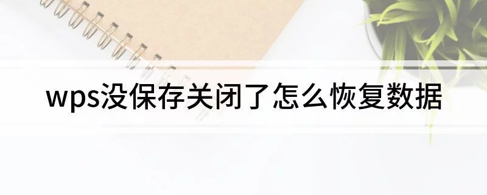
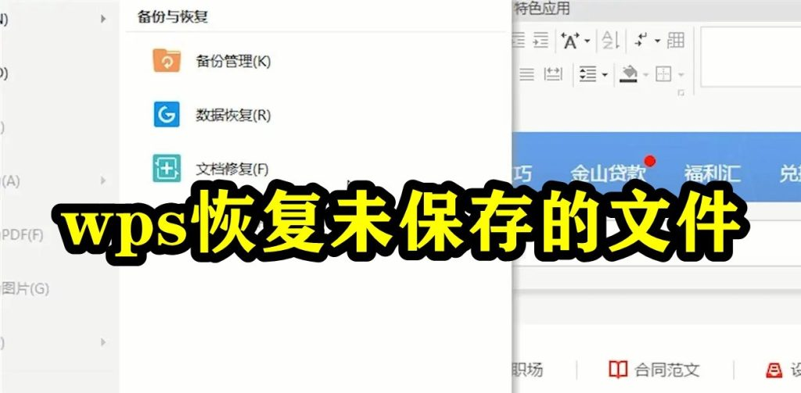

WPS没保存关闭了怎么恢复数据？
2025年3月13日
如果WPS未保存文档并意外关闭，可以通过“自动恢复”功能尝试找回数据。打开WPS后，系统会自动弹出“文档恢复”窗口，列出最近未保存的文件，用户可选择恢复。此外，若启用了WPS云存储，文件也可能已自动同步到云端，可通过云端访问恢复。
WPS自动保存功能介绍
自动保存的工作原理
- 定时保存：WPS自动保存功能通过定时将文档保存到本地或云端，避免因突发情况（如系统崩溃、断电等）导致文档丢失。默认情况下，WPS会每隔几分钟自动保存一次文档。
- 缓存机制：在用户编辑文档时，WPS会将正在编辑的内容存储在临时缓存中。如果程序意外关闭，WPS可以通过缓存恢复大部分内容，减少数据丢失的风险。
- 云同步：对于启用WPS云存储的用户，自动保存功能不仅会保存本地文件，还会将文档自动同步到云端，确保多设备间的同步和数据备份。
如何设置和调整自动保存频率
- 调整保存间隔：用户可以通过WPS设置菜单调整自动保存的时间间隔。进入WPS设置，找到“保存”选项，在“自动保存”设置中修改保存频率，一般可以选择1分钟至30分钟不等。
- 开启或关闭自动保存：默认情况下，WPS会启用自动保存功能，但用户可以根据需求在设置中选择开启或关闭。关闭自动保存时，用户需要手动保存文件。
- 选择保存位置：除了调整保存频率外，用户还可以选择将自动保存的文件保存到本地文件夹或WPS云盘。云端存储更适合需要跨设备工作的用户，而本地保存则适合对安全性有较高要求的用户。
如何使用WPS的文档恢复功能
恢复未保存的文件步骤
- 打开WPS软件：首先，重新启动WPS Office。如果之前的文件未保存并且发生崩溃或关闭，WPS通常会在启动时自动弹出一个“文档恢复”窗口。
- 选择恢复的文档：在“文档恢复”窗口中，WPS会列出最近未保存的文件。用户可以浏览该列表，选择需要恢复的文档并点击“恢复”按钮。
- 保存恢复的文件：恢复后的文件会临时加载到WPS中，用户应尽快点击“保存”并选择存储位置，避免再次丢失数据。恢复的文件通常会保存在自动保存的文件夹或云端。
文档恢复功能的使用限制
- 恢复时间窗口限制：WPS的文档恢复功能通常只对最近的未保存文件有效。文件恢复的时间窗口一般为几小时到一天不等，具体取决于设置和软件版本。超出此时间范围的文件可能无法恢复。
- 丢失的数据量：在某些情况下，如果文件未及时保存或被覆盖，恢复的内容可能会丢失一部分。恢复的文件仅包含自动保存的内容，用户手动保存的修改可能无法恢复。
- 仅限WPS崩溃后的恢复：该功能主要适用于WPS突然崩溃或关闭的场景。如果用户主动关闭程序且没有保存，文档恢复功能可能无法找到未保存的文件。

WPS云存储恢复文件的方法
云存储中文档的自动备份
- 自动同步功能：WPS云存储会自动将用户的文档保存并同步到云端，确保在本地设备发生故障时，可以从云端恢复文件。所有通过WPS Office编辑和创建的文件都会实时保存到云端。
- 备份版本控制：WPS云存储提供版本控制功能，用户可以查看和恢复历史版本的文件。如果文档发生误操作或修改错误，用户可以轻松还原到之前的版本。
- 备份间隔设置：WPS云存储会定期自动备份用户的文件，用户无需手动操作。文件上传至云端后，任何更改都会被自动同步更新，减少了丢失文件的风险。
如何通过云存储恢复已删除文件
- 访问WPS云盘：打开WPS Office并登录您的账号，进入WPS云盘。在云盘中，您可以查看所有已上传的文件。如果文档被误删，可以进入“回收站”查看被删除的文件。
- 恢复已删除的文件：在“回收站”中找到已删除的文件后，点击“恢复”按钮，文件将被恢复到原来的存储位置。需要注意的是，WPS云盘的回收站通常保留删除文件30天，超期后文件将无法恢复。
- 通过文件搜索恢复：如果文件未显示在回收站中，可以尝试通过云盘的搜索功能查找文件名或关键词，看看是否能找到被删除或遗失的文件版本。

WPS临时文件夹恢复数据
如何查找和恢复WPS临时文件
- 查找临时文件位置：WPS会在本地硬盘中创建临时文件来存储正在编辑的文档，默认位置通常为系统的临时文件夹。用户可以通过“文件资源管理器”访问路径：
C:\Users\用户名\AppData\Local\Kingsoft\WPS Office\8.0\Temp（路径可能因系统和WPS版本不同而有所变化）。 - 使用WPS自动恢复功能：如果文档意外关闭，WPS会自动检查临时文件夹，自动恢复未保存的文件。打开WPS后，系统会自动弹出恢复文件的对话框，列出最近的临时文件。
- 手动查找临时文件：如果恢复对话框没有自动弹出，用户可以直接访问临时文件夹，查找文件名中包含“.bak”或“.tmp”的文件，手动恢复临时保存的文档。
临时文件夹的数据恢复方法
- 查找特定扩展名的文件：WPS临时文件通常以
.bak或.tmp为扩展名，用户可以在文件资源管理器中搜索这些文件，并按修改时间进行排序，选择最新的文件进行恢复。 - 重命名恢复文件：找到临时文件后，可以将文件扩展名改为
.docx、.xlsx或.pptx，然后尝试用WPS打开这些文件进行恢复。通常，这些文件包含未保存的文档内容。 - 使用专业恢复工具：如果手动恢复无法成功，用户还可以使用第三方数据恢复软件，如Recuva、EaseUS等，扫描硬盘中丢失的临时文件，恢复意外丢失的数据。
WPS文件损坏的修复方法
如何修复损坏的WPS文档
- 使用WPS自带的修复功能：WPS Office自带一个修复工具，用户可以在打开文件时选择“修复文档”选项。系统会尝试修复文件中的损坏部分并恢复数据。
- 恢复备份文件：如果文档损坏后无法直接修复，WPS会在文档自动保存和云存储中创建备份副本。用户可以从云端或本地文件夹中恢复到最近的备份版本。
- 尝试转换文件格式：有时，损坏的文件可以通过将文件格式转换为其他类型进行修复。用户可以尝试将WPS文档转换为PDF或其他格式，再转换回原来的格式，有时能够恢复部分数据。
常见文档损坏原因及解决办法
- 意外关闭或崩溃：文件在编辑过程中如果遇到系统崩溃或程序意外关闭，可能会导致文档损坏。为了避免这种情况，建议启用WPS的自动保存功能，并定期手动保存文件。
- 病毒或恶意软件感染：病毒或恶意软件可能会损坏文件内容。为了防止这种情况，用户应保持杀毒软件的更新，并定期扫描计算机，避免恶意软件对文件的破坏。
- 文件传输中断：在通过网络或U盘等设备传输文件时，若中断或出现错误，也可能导致文件损坏。确保文件传输过程完整并使用可靠的传输工具，可以有效减少文件损坏的风险。
WPS文件意外关闭后无法恢复怎么办？
WPS文件未保存并意外关闭时，可以通过WPS的自动恢复功能尝试找回数据。重新打开WPS时，系统会自动弹出“文档恢复”窗口，列出最近未保存的文件，用户可以选择恢复并保存文档。
如何查看WPS自动保存的文档？
WPS会自动将编辑的文档保存到本地或云端。如果文件未保存且关闭，用户可以通过“文档恢复”窗口查看自动保存的文档。也可以在WPS云存储中查看并恢复最近编辑过的文件。
WPS文档恢复失败如何解决？
如果WPS文档恢复失败，可以尝试查找WPS的临时文件或备份文件夹中的文件，手动恢复。若无法恢复，可以考虑使用数据恢复软件进行扫描，恢复丢失的文档。
上一篇：
WPS如何打印Excel？
最新文章
如果WPS未保存文档并意外关闭，可以通过“自动恢复”功能尝试找回数据。打开WPS…
在WPS中打印Excel文件，首先打开文件并点击左上角的“文件”按钮，选择“打印…
在WPS中使用格式刷，首先选中已设置好格式的单元格或文本，点击“开始”菜单中的“…
打开WPS Office，点击左上角“WPS文字”或“WPS表格”菜单。选择“选…
WPS PDF的目录功能位于左侧面板。在打开PDF文件后，点击界面左侧的“目录”…
要删除WPS网盘图标，首先右键点击桌面上的WPS网盘图标，选择“删除”或“卸载”…